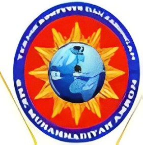

SMK BISA!
Profil sekolah
SMK MUHAMMADIYAH AMBON merupakan salah satu sekolah Menengah Kejuruan Negeri yang ada di kota ambon Provinsi Maluku indonesia sama dengan SMA Pada umumnya di indonesia masa pendidikan sekolah SMK MUHAMMADIYAH AMBON ditempuh dalam waktu tiga tahun pelajaran jurusan industri
Bidang Jurusan
Jurusan yang dimiliki

Teknik Jaringgan Komputer dan Telekomunikasih
Desain Permodelan dan Informasi Bangunan
Ekstrakurikuler